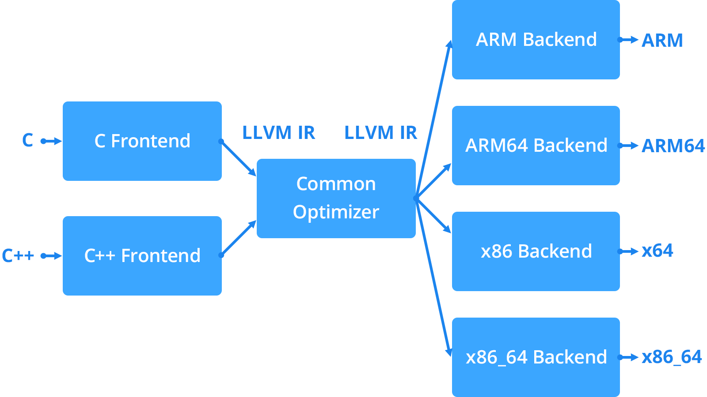
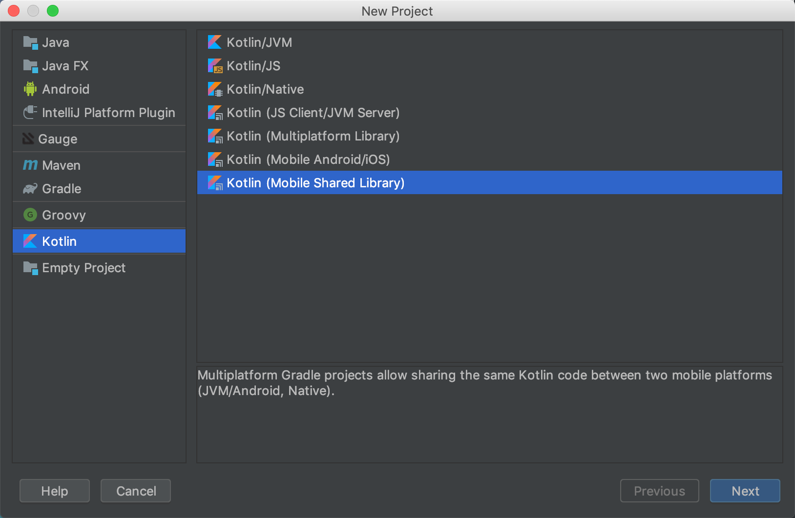
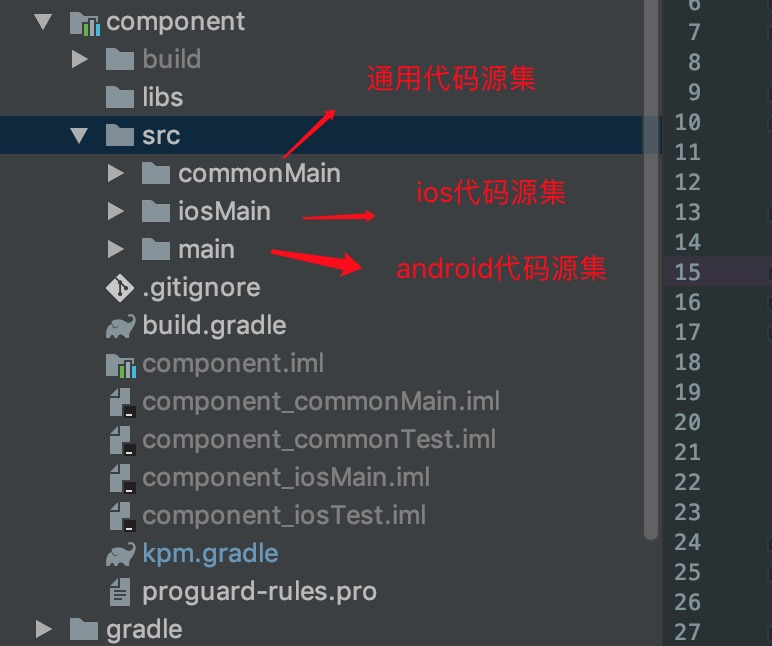
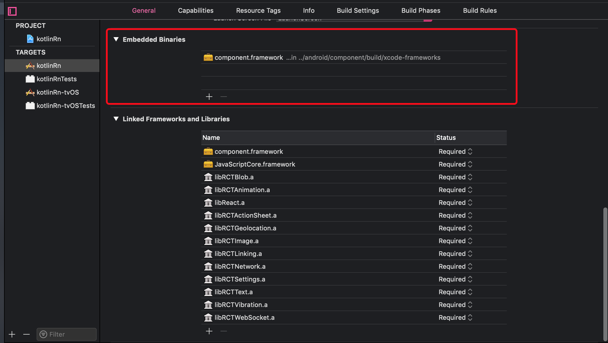
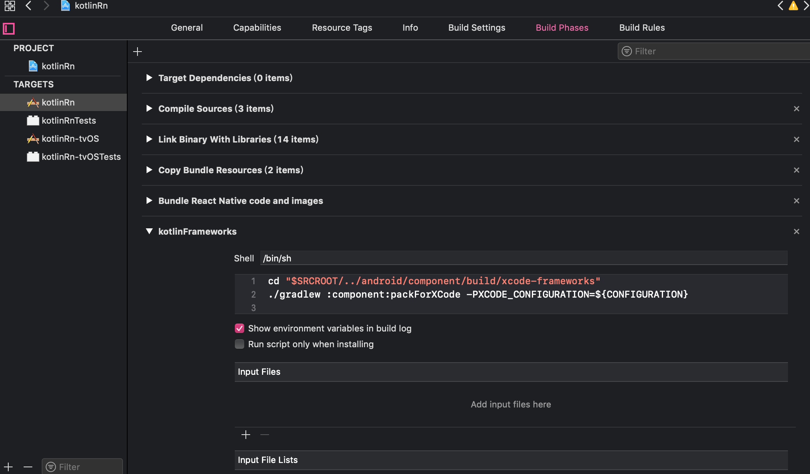

前言
当下市场上的跨端解决方案, 不管使用的是React Native, Flutter 还是Weex, 常见的项目组成是, 业务UI界面由上述框架解决, 而涉及不论是性能问题, 还是平台通用共享逻辑问题, 我们更侧重于原生开发, 而这一块我们必不可免需要至少两个原生开发同学通过沟通和开发统一Native层的功能逻辑, 而针对于这些原生通用代码, 现有常见的解决方案还是主要通过传统的C/C++来解决.
而现在, JetBrains的Kotlin/Native为我们提供了另外一个解决方案.
什么是Kotlin/Native
Kotlin/Native 是一种将 Kotlin 代码编译为无需虚拟机就可运行的原生二进制文件的技术。 它是一个基于 LLVM 的 Kotlin 编译器后端以及 Kotlin 标准库的原生实现。
LLVM是一种编译器基础结构，它基于具有可重新定位性的三阶段设计的概念。简单来说，这意味着可以为具有LLVM后端编译器的任何目标编译具有前端LLVM编译器的任何语言。(Swift可以编译Android工程也是基于LLVM实现)

Kotlin/Native 支持以下平台：
- iOS（arm32、 arm64、 模拟器 x86_64）
- MacOS（x86_64）
- Android（arm32、arm64）
- Windows（mingw x86_64、x86）
- Linux（x86_64、 arm32、 MIPS、 MIPS 小端次序、树莓派）
- WebAssembly（wasm32）
Kotlin支持两种与Native的互操作行为方式:
- 通过Kotlin/Native内包含的
cinteroptool通过自创建def文件解析C头文件, 快速生成与Kotlin需要交互的所有内容(包括类型, 函数, 常量) - 直接使用现有库的互操作, 其中包括
- 静态或动态 C 语言库
- C 语言、 Swift 以及 Objective-C 框架
当前POSIX、 gzip、 OpenGL、 Metal、 Foundation 以及许多其他流行库与 Apple 框架都已预先导入并作为 Kotlin/Native 库包含在编译器包中
Kotlin MultiPlatform(KMP)
在Kotlin/Native(Beta)1.3.30版本开始, Kotlin/Native是作为KMP中的目标平台之一, 当前我们可以基于KMP构建我们的跨端共享代码项目

在KMP DSL中我们有几个基础概念需要了解
Target
它表示KMP工程的产出变体, 根据配置可生成对应的android库, ios的framework, jvm应用等等..
Present
用来定义对应Target的预配置, 譬如可通过
fromPreset(<PRESET_KIND>, <TARGET_NAME>)设置,PRESET_KIND需要使用当前存在的值, 当前目标预设值如下:androidNativeArm32andandroidNativeArm64for Android NDK;- android for Android
iosArm32,iosArm64,iosX64for iOS;linuxArm32Hfp,linuxMips32,linuxMipsel32,linuxX64for Linux;macosX64for MacOS;mingwX64for Windows;wasm32for WebAssembly.
同时, TARGET_NAMAE值如下:
jvmfor Kotlin/JVM.jsfor Kotlin/JS;androidfor Android applications and libraries. (AGP插件的引用需要在targets生成之前)
上手试验
开发前置准备
我们可以使用Android Studio或者IntelliJ IDEA进行开发, 对应IDE需要安装Kotlin插件1.3.21及以上版本. 安装XCode(跑ios工程), 同时Gradle版本需要在4.7以上, 另需要安装Xcode
共享代码模块的新建
创建Kotlin-MultiPlatform工程, 我们需要创建一个基于Gradle构建工程, 这个原生Android工程就可以满足, 然后我们通过引用kotlin-multiplatform`插件进行部署工作.
通过kotlin.targets设置目标平台, 下方代码是设置ios平台和android平台, 当然也可以设置jvm和js端.
1 | kotlin { |
不同targets依赖的三方库可能不同, 可以通过kotlin.sourceSets设置.
1 | kotlin{ |
同时不同源集工程目录构建如下图, 需要注意的是, 源集的命名需要遵循KMP的强加的特定命名, 它是根据target + compilation来命名的, 如果我们这里需要一个ios特性的测试模块, 那么新增的源集命名应该为iosTest

expect / actual
当两端实现存在各自差异化代码时, 可以通过expect/actual关键字进行表示, expect需要在common中进行声明, 它可以被理解为接口的声明, 不过它不仅能修饰类, 也可以修饰单独的对象.actual修饰对应的实现.
如下方代码, 线程调度在不同平台上的实现是不同的, 所以我们需要指定对应Dispatcher
1 | // in commonMain Module Dispatcher.kt |
1 | // in androidMain Module Dispatcher.kt |
1 | // in iosMain Module Dispatcher.kt |
同样, 像基于各端自身特性的API的兼容, 我们基本都需要通过expect/actual进行分别实现.
ios上的互操作
在执行build后, 构建目录下会生成供ios使用的静态库, 然后通过XCode新建工程, 配置引入对应的framework, 并在构建流程上添加对应的脚本配置, 使其编译的时候可以自动通过gradle编译kt库更新framework.(由于我们的Demo工程是基于RN框架的, 所以在通过react-native init后我们在对应生成的ios工程下直接配置即可)


我们通过引用component, 可以直接调到kt的编译生成的二进制代码.
1 | RCT_EXPORT_METHOD (requestWith:(NSString *)url |
这样就实现了双端底层的代码共享.
其他
多平台三方库的支持
- 序列化 Kotlin Serialization
- IO Kotlin io
- 网络 Ktor
- 数据库 sqldelight
学习成本
- Kotlin语言学习
- 双端一定开发基础
- 多平台库的学习